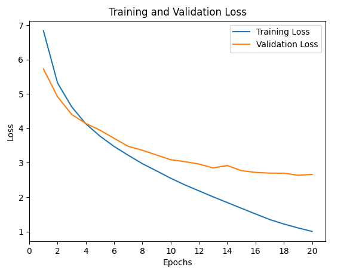
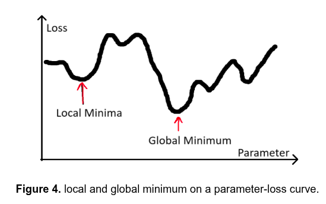
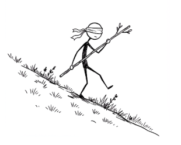
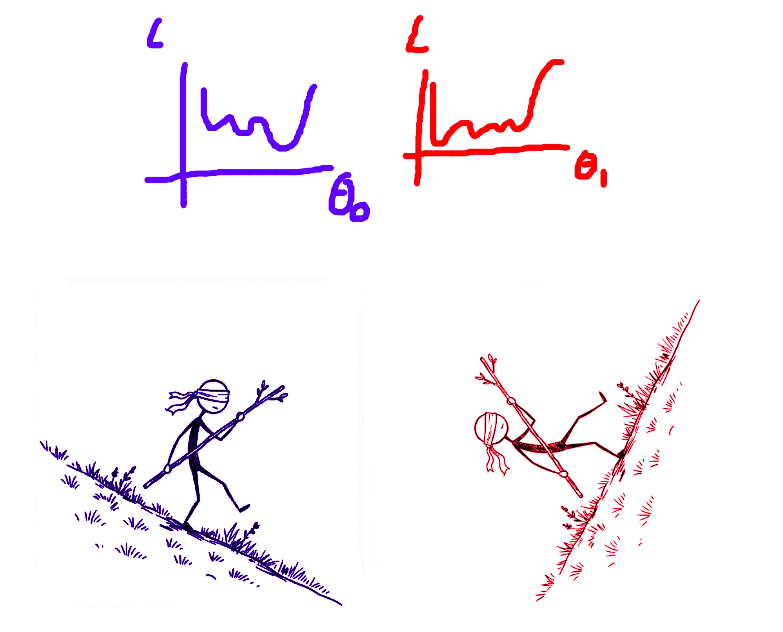
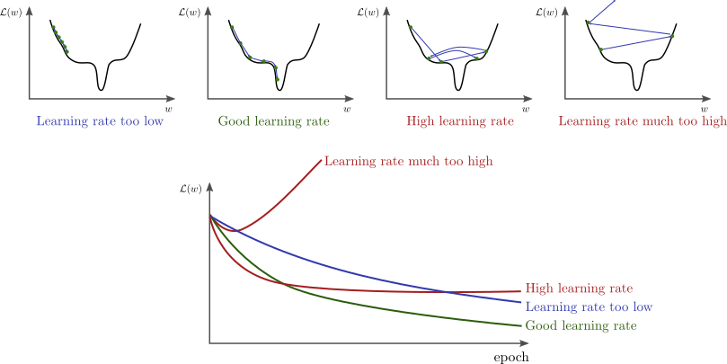
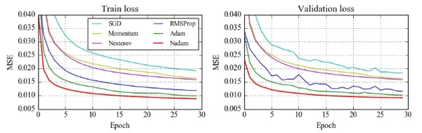

The Training Sequence
Three lines that make learning happen:
- Measure - How wrong are we?
- Diagnose - What caused the error?
- Update - How do we fix it?
Step 1: Measuring Loss
Loss function: compares predictions to true answers
Higher number = more wrong
Goal: minimize loss

Measuring Error for Regression Tasks
For regression tasks (predicting numbers): temperature, price, distance
Average error = \(\frac{1}{n} \sum_{i=1}^n (\hat{y}_i - y_i)\)
| 6 |
4 |
\(6 - 4 = 2\) |
| 3 |
5 |
\(3 - 5 = -2\) |
Problem: Average error = 0 (mistakes cancel out!)
Mean Squared Error Loss
Squaring:
- Gets rid of minus signs (all mistakes count)
- Makes bigger mistakes matter more
\[
\text{MSE} = \frac{1}{n} \sum_{i=1}^n (\hat{y}_i - y_i)^2
\]
Cross-Entropy Loss
For classification tasks (predicting categories): digit, animal, word
Model outputs: confidence scores (probabilities) for each class
All scores sum to 100%
\[
\text{BCE} = -\sum_{i=1}^n y_i \log(\hat{y}_i)
\]
How Cross-Entropy Works
Punishes overconfident wrong answers
- 95% sure it’s a 7, but it’s actually a 3 → very high loss
- 55% sure it’s a 7, but it’s actually a 3 → smaller loss
Goal: Confident about right answers, unsure about wrong ones
Step 2: Diagnosing the Problem
Backward calculates gradients
Gradients = diagnostic scores for each parameter
- Positive gradient → increasing weight makes loss worse
- Negative gradient → increasing weight helps
- Large gradient → big influence
- Small gradient → barely mattered
What Backward Does NOT Do
Backward does NOT update weights
It only calculates gradients
Updates happen later with optimizer.step()
The Gradient Descent Analogy

Plos: x-axis: weight, y-axis: loss
Goal: minimize loss (reach bottom of valley)
Gradient: tells you the slope (which way is downhill?)
Go downhill → lower loss
Zooming in on a single parameter taking a step against the gradient

Multiple parameters
If we have two parameters (\(\theta_0\) and \(\theta_1\)):

Stochastic Gradient Descent (SGD)
Strategy:
- Negative gradient (\(\frac{\partial \text{loss}}{\partial w_0}\)) → increase weight (\(w_0\))
- Positive gradient (\(\frac{\partial \text{loss}}{\partial w_1}\)) → decrease weight (\(w_1\))
- Big gradient (\(\frac{\partial \text{loss}}{\partial w_0}\)) → big change (\(w_0\))
- Small gradient (\(\frac{\partial \text{loss}}{\partial w_1}\)) → small change (\(w_1\))
Scales updates with learning rate: \(\text{step size} = \text{learning rate} \times \text{gradient}\)
Learning Rate Matters

Adam Optimizer
Adapts learning rate for each weight individually
Like having an assistant:
- Knows which weights need big adjustments
- Knows which need fine-tuning
Popular first choice: reliable, flexible, often faster

Optimizers’ loss curves
Why zero_grad()?
Every backward() call adds to existing gradients
Without zero_grad(): gradients accumulate incorrectly
Result: training breaks
Complete Training Loop
for batch in dataloader:
optimizer.zero_grad() # Clear gradients
outputs = model(inputs) # Forward pass
loss = loss_fn(outputs, targets) # Measure
loss.backward() # Diagnose
optimizer.step() # Update
Measure → Diagnose → Update
What’s Next?
In Session 3: Device Management and Image Classification Setup, you learn:
- Running on GPUs vs CPUs
- Moving models and data to devices
- Setting up MNIST data pipeline
- Building your first image classifier architecture